먼저 생각해 보세요.
Das ist der Film, den ich gesehen habe. 영화를 본 사람은 누구인가요?
관계문 안의 주어는 ich예요. den은 '그 영화를'이라는 뜻으로 der Film을 받아요.
A2.2 Entdecken · Lektion 7
음악과 영화
음성은 준비 중이에요. 듣기 단추와 받아쓰기는 음성이 올라오면 쓸 수 있어요. 그동안은 글을 읽으면서 공부해요.
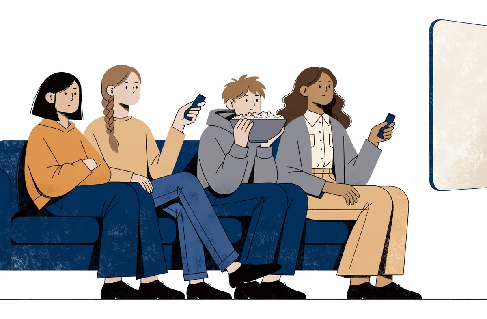
금요일 저녁, Wagner 집에 친구들이 모여 영화를 봐요. 어떤 영화를 볼지 정하고, 영화가 끝난 뒤에는 Thomas가 쾰른의 옛이야기를 들려줘요.
눌러서 들어 보세요.
먼저 생각해 보세요.
Das ist der Film, den ich gesehen habe. 영화를 본 사람은 누구인가요?
관계문 안의 주어는 ich예요. den은 '그 영화를'이라는 뜻으로 der Film을 받아요.
Lektion 6의 낱말 다섯 개를 다시 떠올려 보세요.
문법 Relativsätze im Akkusativ (der Film, den …), Präteritum (kam, ging, sagte)
이 과를 마치면 영화와 책을 소개하고, 줄거리를 말하고, 추천할 수 있어요.
금요일 저녁이에요. Wagner 집 거실에 친구들이 모였어요.
들으면서 찾아보세요. 친구들은 어떤 영화를 보기로 하나요?
영화가 끝났어요. Yuna가 시내에서 본 분수 이야기를 꺼내요.
들으면서 찾아보세요. 작은 남자들은 왜 다시 오지 않았나요?
두 대화를 듣고 답하세요.
Lukas는 어떤 영화를 보자고 하나요?
Elif mag Horrorfilme.
Ich mag keine Filme, die mir Angst machen.
Wer hat den Film „Sommer am See“ empfohlen?
Worum geht es in dem Film?
Heinzelmännchen은 밤에 무엇을 했나요?
Was legte die Frau auf die Treppe?
Die Heinzelmännchen kamen am nächsten Tag wieder.
Sie gingen weg und kamen nie wieder.
낱말 27개예요. 낱말이나 예문 앞의 단추를 누르면 소리가 나요. 명사는 der, die, das를 색으로 구분했어요.
die Serie, die Serien 드라마, 시리즈
Ich sehe gern Serien.나는 드라마를 즐겨 봐요.
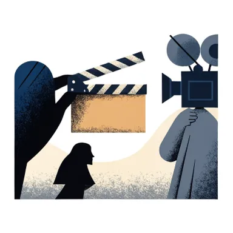
die Schauspielerin, die Schauspielerinnen (여자) 배우
Die Schauspielerin spielt sehr gut.그 배우는 연기를 아주 잘해요.
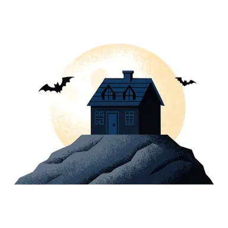
der Horrorfilm, die Horrorfilme 공포 영화
Ich mag keine Horrorfilme.나는 공포 영화를 안 좋아해요.
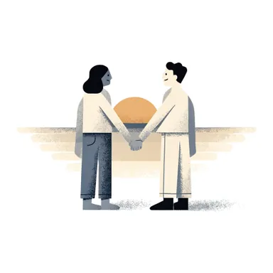
der Liebesfilm, die Liebesfilme 로맨스 영화
Der Liebesfilm war schön.그 로맨스 영화는 좋았어요.
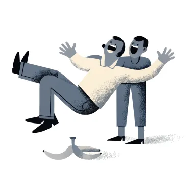
die Komödie, die Komödien 코미디
Die Komödie ist sehr lustig.그 코미디는 아주 웃겨요.
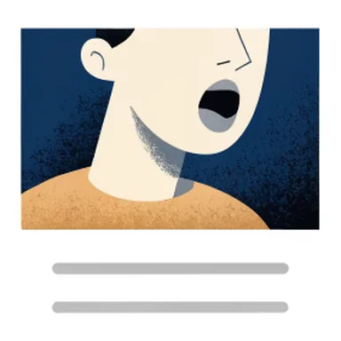
der Untertitel, die Untertitel 자막
Ich sehe den Film mit Untertiteln.나는 그 영화를 자막으로 봐요.
der Titel, die Titel 제목
Wie ist der Titel?제목이 뭐예요?
das Ende 끝, 결말
Das Ende war traurig.결말이 슬펐어요.
die Geschichte, die Geschichten 이야기
Das ist eine alte Geschichte.그건 옛이야기예요.
gruselig 으스스한, 무서운
Der Film ist gruselig.그 영화는 으스스해요.
witzig 웃긴, 재치 있는
Die Serie ist witzig.그 드라마는 웃겨요.
der Song, die Songs 노래, 곡
Der Song ist neu.그 노래는 새로 나왔어요.
das Lied, die Lieder 노래
Wir singen ein Lied.우리는 노래를 한 곡 불러요.
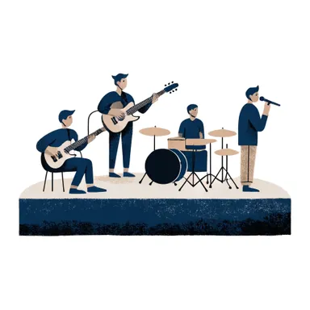
die Band, die Bands 밴드
Die Band kommt aus Hamburg.그 밴드는 함부르크에서 왔어요.
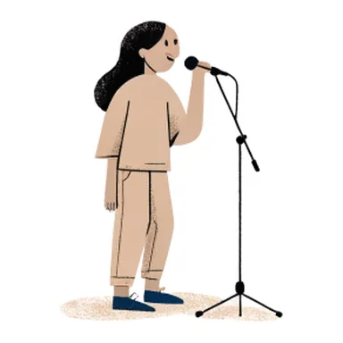
die Sängerin, die Sängerinnen (여자) 가수
Die Sängerin singt auf Deutsch.그 가수는 독일어로 노래해요.
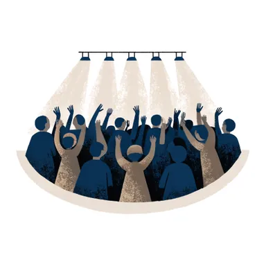
das Konzert, die Konzerte 콘서트
Am Samstag gehe ich auf ein Konzert.토요일에 나는 콘서트에 가요.
der Star, die Stars 스타
Sie ist ein großer Star.그녀는 대단한 스타예요.
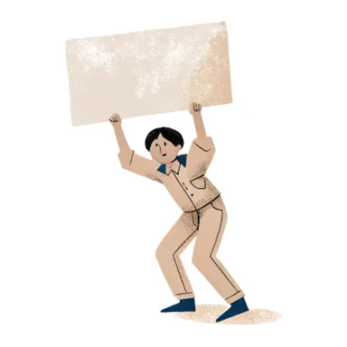
der Fan, die Fans 팬
Ich bin ein Fan von der Band.나는 그 밴드의 팬이에요.
die Stimme, die Stimmen 목소리
Sie hat eine tolle Stimme.그녀는 목소리가 멋져요.
empfehlen (du empfiehlst, er empfiehlt) 추천하다
Ich empfehle dir das Buch.너한테 그 책을 추천해.
Es geht um … ~에 대한 이야기예요
Es geht um zwei Freunde.두 친구에 대한 이야기예요.
kennenlernen, hat kennengelernt 알게 되다, 처음 만나다
Ich habe Elif in der Schule kennengelernt.나는 Elif를 학교에서 알게 됐어요.
passieren, ist passiert (일이) 일어나다
Was ist passiert?무슨 일이 있었어요?
plötzlich 갑자기
Plötzlich war das Licht aus.갑자기 불이 꺼졌어요.
bestimmt 틀림없이, 분명히
Der Film ist bestimmt gut.그 영화는 틀림없이 좋을 거예요.
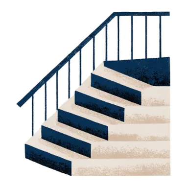
die Treppe, die Treppen 계단
Ich gehe die Treppe hoch.나는 계단을 올라가요.
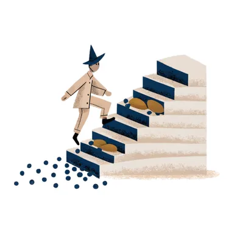
hinfallen, ist hingefallen 넘어지다
Das Kind ist hingefallen.아이가 넘어졌어요.
이 과의 낱말로 여덟 문제를 풀어요.
예문을 보고 답해 보세요.
der Film, den ich gesehen habe 에서 관계문의 주어는 무엇인가요?
규칙
관계문 안에 주어가 따로 있으면 관계대명사는 그 문장의 목적어, 곧 4격이에요. 4격에서는 남성만 den으로 바뀌고 die, das, 복수 die는 1격과 같아요. 동사는 맨 끝에 와요.
| 명사 | 1격: 관계문의 주어 | 4격: 관계문의 목적어 |
|---|---|---|
| der Film | der Film, der neu ist | der Film, den ich mag |
| die Serie | die Serie, die neu ist | die Serie, die ich mag |
| das Buch | das Buch, das neu ist | das Buch, das ich mag |
| die Songs (복수) | die Songs, die neu sind | die Songs, die ich mag |
주의 두 문장으로 풀어 보면 쉬워요. Das ist der Film. Ich habe ihn gesehen. → Das ist der Film, den ich gesehen habe. ihn이 den이 돼요.
예문을 보고 답해 보세요.
옛이야기를 들려줄 때 Thomas는 어떤 과거를 쓰나요?
규칙
옛이야기나 동화, 책에서는 Präteritum을 써요. 규칙 동사는 줄기에 -te를 붙여요. 불규칙 동사는 줄기의 모음이 바뀌고 끝이 붙지 않아요. ich와 er, sie, es의 모양이 같고, 복수는 -n이나 -en을 붙여요.
| 원형 | er, sie, es | sie (복수) |
|---|---|---|
| sagen | sagte | sagten |
| machen | machte | machten |
| legen | legte | legten |
| kommen | kam | kamen |
| gehen | ging | gingen |
| schlafen | schlief | schliefen |
| fallen | fiel | fielen |
| werden | wurde | wurden |
주의 친구와 말할 때는 보통 Perfekt를 써요. Ich habe geschlafen. 하지만 war, hatte, wollte, musste, konnte는 말할 때도 Präteritum으로 써요.
예문을 보고 답해 보세요.
Es geht um 뒤에는 몇 격이 오나요?
규칙
영화나 책이 무엇에 대한 이야기인지 말할 때 Es geht um과 4격을 써요. 물을 때는 Worum geht es?라고 해요. 줄거리는 지금 일처럼 현재형으로 말하고, am Anfang, dann, am Ende로 차례를 나타내요.
| 차례 | 예문 |
|---|---|
| 무엇에 대한 이야기 | Es geht um einen Jungen und seinen Hund. |
| 처음 | Am Anfang ist der Junge allein. |
| 가운데 | Dann findet er einen Hund. |
| 끝 | Am Ende sind die zwei Freunde. |
주의 추천할 때는 Ich empfehle dir den Film.이라고 해요. 누구에게(3격)와 무엇을(4격)을 함께 써요.
Elif가 좋아하는 밴드를 소개해요. 듣고 답하세요.
Meine Lieblingsband
Elif Meine Lieblingsband heißt „Nordlicht“. Das ist eine Band, die aus Hamburg kommt.
Elif Die Sängerin hat eine tolle Stimme. Die Songs, die sie singt, schreibt sie selbst.
Elif Der Song, den ich am liebsten mag, heißt „Bis morgen“.
Elif Im Mai war ich mit Can auf einem Konzert. Es war das erste Konzert, das ich gesehen habe.
Elif Nach dem Konzert haben wir die Band getroffen. Ich war so nervös!
Woher kommt die Band?
Wer schreibt die Songs?
Elifs Lieblingssong heißt „Nordlicht“.
„Nordlicht“는 밴드 이름이에요. 노래 제목은 „Bis morgen“이에요.
Elif는 콘서트가 끝나고 무엇을 했나요?
듣고 알맞은 것을 고르세요.
Lukas는 그 영화를 몇 번 봤나요?
Das ist der Film, den ich dreimal gesehen habe.
Emma는 그 드라마를 어떻게 생각하나요?
Die Serie, die du mir empfohlen hast, ist langweilig.
그 책은 무엇에 대한 이야기인가요?
In dem Buch geht es um einen Hund, der sprechen kann.
Thomas는 어릴 때 토요일마다 무엇을 했나요?
Als Kind ging ich jeden Samstag ins Kino.
쾰른에 전해 오는 옛이야기예요. Schneider는 '옷 만드는 사람'이라는 뜻이에요. 읽고 답하세요.
Die Heinzelmännchen von Köln
Vor langer Zeit lebten in Köln die Heinzelmännchen. Das waren kleine Männer, die man nie sehen konnte.
Jede Nacht kamen sie in die Stadt. Sie backten Brot, machten Kleidung und putzten die Häuser. Die Leute in Köln mussten nicht viel arbeiten.
Aber die Frau von einem Schneider wollte die kleinen Männer sehen. In der Nacht legte sie Erbsen auf die Treppe.
Die Heinzelmännchen kamen, fielen auf der Treppe hin und wurden wütend. Sie gingen weg und kamen nie wieder.
Seit diesem Tag müssen die Leute in Köln ihre Arbeit selbst machen.
Wann arbeiteten die Heinzelmännchen?
Was machten die Heinzelmännchen?
Die Leute in Köln konnten die Heinzelmännchen jeden Tag sehen.
Das waren kleine Männer, die man nie sehen konnte.
Warum wurden die Heinzelmännchen wütend?
이야기는 어떻게 끝나나요?
학교 신문에 실린 영화 소개 글이에요. 읽고 답하세요.
Filmtipp der Woche: „Sommer am See“
In dem Film geht es um Lena, ein Mädchen aus Berlin, das in den Ferien zur Oma fahren muss.
Am Anfang findet sie alles langweilig. Aber dann lernt sie Tom kennen, einen Jungen, den die anderen Kinder nicht mögen.
Tom zeigt Lena den See und die zwei werden Freunde.
Der Film ist lustig und auch ein bisschen traurig. Die Musik, die man im Film hört, ist sehr schön.
Wir empfehlen den Film für alle ab zwölf Jahren. Vier von fünf Sternen!
Worum geht es in dem Film?
Lena findet am Anfang alles toll.
Am Anfang findet sie alles langweilig.
Wen lernt Lena kennen?
이 글은 영화를 몇 살부터 권하나요?
관계문에 들어갈 알맞은 말을 고르세요.
Das ist der Film, ich gestern gesehen habe.
관계문 안에 주어 ich가 있으니 4격 den이에요.
Das ist die Serie, Lukas so mag.
Das ist das Buch, ich gerade lese.
Das sind die Songs, wir im Auto hören.
Wie heißt der Schauspieler, du so toll findest?
Das ist der Film, um acht Uhr anfängt.
여기서는 der Film이 관계문의 주어라서 1격 der예요.
관계문의 주어인지 목적어인지 보고 der와 den 가운데 고르세요.
Der Junge, neben mir sitzt, heißt Paul.
Der Junge, du dort siehst, heißt Paul.
Der Song, jetzt kommt, ist mein Lieblingssong.
Der Song, die Band gerade spielt, ist neu.
Der Hund, dort läuft, gehört Emma.
옛이야기예요. 알맞은 과거 모양을 고르세요.
Früher die Heinzelmännchen in der Nacht.
Die Frau Erbsen auf die Treppe.
Die kleinen Männer hin.
Sie weg.
Die Frau : „Ich will sie sehen!“
Am Morgen alles fertig.
동사의 원형과 과거 모양을 짝지으세요.
낱말을 순서대로 눌러 문장을 만드세요.
내가 본 영화야.
그 영화는 한 여자아이에 대한 이야기야.
너한테 그 드라마를 추천해.
Heinzelmännchen은 다시는 오지 않았어.
낱말과 뜻을 짝지으세요.
듣고 그대로 써 보세요.
음성 준비 중Worum geht es in dem Film? 그 영화는 무슨 내용이야?
음성 준비 중Ich empfehle dir das Buch. 너한테 그 책을 추천해.
음성 준비 중Sie kamen nie wieder. 그들은 다시는 오지 않았어.
Das ist der Film, den ich letzte Woche gesehen habe. 내가 지난주에 본 영화야.
Der Film heißt … 영화 제목은 ~야.
Die Schauspielerin spielt sehr gut. 그 배우는 연기를 아주 잘해.
Worum geht es? 무슨 내용이야?
Es geht um ein Mädchen, das … ~하는 여자아이 이야기야.
Am Anfang … 처음에는 …
Am Ende … 마지막에는 …
Ich empfehle dir den Film. 그 영화를 너한테 추천해.
Den musst du sehen! 그건 꼭 봐야 해!
Das ist nichts für mich. 그건 내 취향이 아니야.
Der Film war spannend. 영화가 흥미진진했어.
Das Ende war traurig. 결말이 슬펐어.
Ich habe viel gelacht. 많이 웃었어.
대화 A에서 역할을 하나 고르세요. 상대의 말은 음성으로 나오고, 내 차례에는 직접 말해요.
친구에게 권하고 싶은 영화나 책, 드라마를 하나 골라 적으세요. 완성된 문장을 소리 내어 읽어 보세요.
Ich empfehle dir den Film „Sommer am See“.
Es geht um ein Mädchen und einen Jungen.
Ich finde die Geschichte lustig und ein bisschen traurig.
Mein Filmtipp
좋아하는 영화나 책, 드라마를 소개하는 글을 써 보세요. 일곱 문장쯤 써요.
Mein Tipp ist der Film „Sommer am See“. In dem Film geht es um ein Mädchen, das in den Ferien zur Oma fährt. Am Anfang ist sie traurig, weil sie dort keine Freunde hat. Dann lernt sie einen Jungen kennen. Am Ende sind die zwei gute Freunde. Die Musik, die man im Film hört, ist besonders schön. Ich empfehle den Film meinen Freunden.
다 쓴 뒤에 확인해 보세요.
Ich kann einen Film oder ein Buch vorstellen.영화나 책을 소개할 수 있어요.
Ich kann sagen, worum es in einer Geschichte geht.이야기의 줄거리를 말할 수 있어요.
Ich kann etwas empfehlen.추천할 수 있어요.